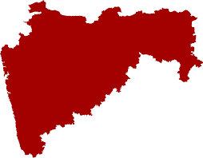
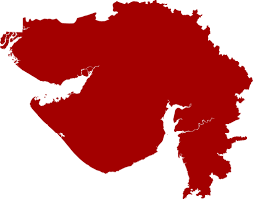

MARATHI
Major States in India Speaking Marathi are:
- Maharashtra
- Karnataka
- Goa
- Madhya Pradesh
- Gujarat
Maharashtra
About Maharashtra
Click on the Image to Know More

Karnataka
About Karnataka
Click on the Image to Know More

Goa
About Goa
Click on the Image to Know More
Uttar Pradesh
About Uttar Pradesh
Click on the Image to Know More

Gujarat
About Gujarat
Click on the Image to Know More

Scan For Feedback